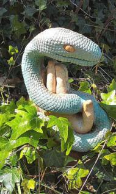

JBMulligan
Bears Eat Monkey in Front of Zoo Visitors
(news headline)
Nature is sometimes a little too close to us,
not picturesque and cute, nor crude but barred
from showing us the true carnivorous
tearing of flesh whose shrieking can be heard
above the nearby traffic and the songs
of cotton-candy thinness floating from
pavilions where the burgers and foot-longs
are sanitary, though the greasy gleam
is like the rosy shine of living blood
suddenly blooming in the afternoon
beneath the birds that squawk, scatter and hide
and silver indifference of a passing plane.
So strain to watch, or flinch and turn, but see
in meal and eater: meat is our destiny.
fall of the serpent
The serpent writes in the book of the leaves,
snakeskin pages of the fall, its slow story:
how the invisible, like a wind within the body,
a breath beneath the air the lung-bellows heaves
into and out of itself, can move whatever lives
to freeze at the rustle, the taut skin uneasily
surrounding the clenched heart, the slick, queasy
terror that coils over and squeezes what it loves
while the snake glides by, its erotic tongue
probing the worldly scents, tenderly and quick
in its attentions, cherishing the various tastes,
each for its own moment, along the long
journey through untold stories to a dark
suddenness, to the last fall of all bright beasts.
Quartet for the End of Time
************ ***i
Dark messianic impulse — where does it lead?
The clock, the cinder track, all end and start
and go on. Young women turn to dust and bleed,
and clench and open like a pumping heart,
then people hurtle through the flaming sky
to vanish, leaving shadows in a pose
of daily life uncoiling endlessly,
a frieze of figures on an antique vase.
It shatters. Shards are placed and pasted down,
blank spaces filled, a new mosaic made
of parts of an older art, a vision drawn
to grunted music, daubed with drying blood
and prancing on a stage. New wreckage breaks
apart on rocks, in waves — the spurt and spew
fall on us all, as we cling to old mistakes.
I cannot even hear what I call to you.
************** *ii
The Thought Police on both sides of the street
patrol in tailored suit and tired smile,
politely urging up and down the beat
a bent receptiveness, and all the while
the clock grows louder, faster, like a plane
approaching; horns and whistles wait. The breath
releases slowly, or the shadows stain
the standing wall and swollen clouds unearth
the hidden beast.Survivors pick and choose
appropriate descriptions of the day
in growing chorus; words blur as they fuse
to growl or whimper, which bright teeth relay
as crisp, enunciated morsels to
a shocked and eager horde of customers.
Exhausted arms sift rubble, find a few
remains extractable from cooling embers.
************** *iii
The seeds explode in hot erupting fields
of shattered fruit. The pump at the poisoned well
oozes a mucous yellow sludge, which yields
aroma of damnation. Rotted swill
bubbles in wooden bowls, garnished with flies.
The children’s eyes are screams of common prayer.
Response comes, thunder from the flowering skies
and gently drifts, and gathers everywhere.
Belief in our abandonment is sure:
deliverance is voiding, excrement
that beetles roll in bundled, grainy spheres.
Home is a rubbled wall, the veil is rent
exposing the bony harlot’s lunar face,
the cave-mouth calling, and the echoing howl
from among the bone-mounds of a hungry voice
calling down appetite upon us all.
*************** iv
New grasses stab through stubble. Asphalt cracks
and weed-beaks poke into a dusty breeze.
Infected mounds of shoreline foam attract
small hoverers, which tendrils stalk and seize.
Persistent, casual pollen floats across
the flowing corn, and birds like bright fish dart
and swerve, then disappear. A mottled face
ripens in underbrush, stone eyes alert.
The painted hills unload their bounteous haul
as sterile boxes sink into the mud.
The fire-creatures echo animal-call.
The trap awaits anointment with fresh blood.
The snow of years has gathered. Barren white
stretches beneath the emptied moon. Along
the mountain-crest, harsh voices ring the night
with prayer and imprecation, animal song.
JBMulligan has had poems and stories in dozens of magazines, including
recently, Big Pond-Rumours, Mystic Prophet, Broken Bridge Review, Poetry
Midwest and Colere, and two chapbooks: The Stations of the Cross and THIS
WAY TO THE EGRESS, and has appeared in the anthology Inside Out: A
Gathering of Poets ( http://www.geocities.com/anneyohn2003/index.htm).
|